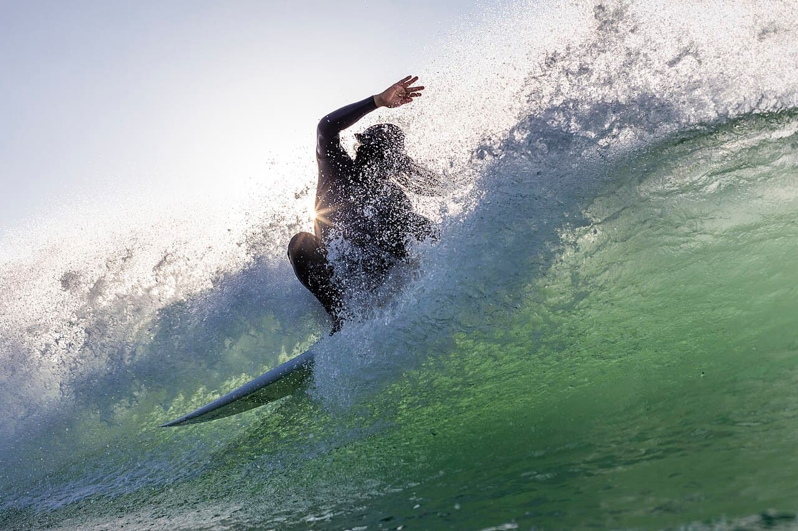

Lobitos
Pérou · surf

Gauches multiples et tubulaires dans un ancien village pétrolier du nord péruvien.
- Lieu
- Pérou
- Niveau
- Intermédiaire
- Activités
- surf
- Type d'eau
- Mer / océan
- Coordonnées
- -4.45, -81.28 (position approximative du secteur)
Dangers à connaître
- Eau fraîche.
- Fond par endroits.
Le conseil d'Ocean Buddy
Plusieurs gauches de qualité ; eau plus fraîche que les tropiques.
Ouvrir dans Ocean Buddy Télécharger sur l'App Store
Source : Description historique Ocean Buddy · vérification externe en attente.